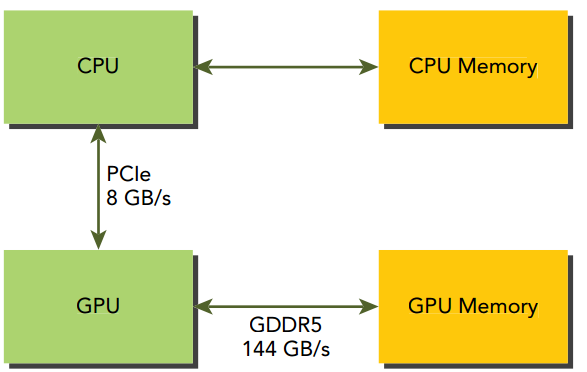

Global Memory¶
This Chapter will explain the CUDA memory model and,by analyzing different global memory access patterns, teach you how to use global memory efficiently from your kernel.
Memory Hierarchy¶
In general, applications do not access arbitrary data or run arbitrary code at any point-in-time. Instead, applications often follow the principle of locality, which suggests that they access a relatively small and localized portion of their address space at any point-in-time. There are two different types of locality: ➤ Temporal locality (locality in time) ➤ Spatial locality (locality in space) Temporal locality assumes that if a data location is referenced, then it is more likely to be referenced again within a short time period and less likely to be referenced as more and more time passes. Spatial locality assumes that if a memory location is referenced, nearby locations are likely to be referenced as well.

Main memory for both CPUs and GPUs is implemented using DRAM (Dynamic Random Access Memory), while lower-latency memory (such as CPU L1 cache) is implemented using SRAM (Static Random Access Memory). The largest and slowest level in the memory hierarchy is generally implemented using a magnetic disk or flash drive. In this memory hierarchy, data is either kept in lowlatency, low-capacity memory when it is actively being used by the processor, or in high-latency, high-capacity memory when it is being stored for later use. This memory hierarchy can provide the illusion of large but low-latency memory.
To programmers, there are generally two classifications of memory: ➤ Programmable: You explicitly control what data is placed in programmable memory. ➤ Non-programmable: You have no control over data placement, and rely on automatic techniques to achieve good performance.
In the CPU memory hierarchy, L1 cache and L2 cache are examples of non-programmable memory. On the other hand, the CUDA memory model exposes many types of programmable memory to you:
➤ Registers
➤ Shared memory
➤ Local memory
➤ Constant memory
➤ Texture memory
➤ Global memory
Figure below illustrates the hierarchy of these memory spaces. Each has a different scope, lifetime, and caching behavior. A thread in a kernel has its own private local memory. A thread block has its own shared memory, visible to all threads in the same thread block, and whose contents persist for the lifetime of the thread block. All threads can access global memory. There are also two read-only memory spaces accessible by all threads: the constant and texture memory spaces. The global, constant, and texture memory spaces are optimized for different uses. Texture memory offers different address modes and filtering for various data layouts. The contents of global, constant, and texture memory have the same lifetime as an application.

Memory access example¶
#include <cuda_runtime.h>
#include <stdio.h>
/*
* An example of using a statically declared global variable (devData) to store
* a floating-point value on the device.
*/
__device__ float devData;
__global__ void checkGlobalVariable()
{
// display the original value
printf("Device: the value of the global variable is %f\n", devData);
// alter the value
devData += 2.0f;
}
int main(void)
{
// initialize the global variable
float value = 3.14f;
CHECK(cudaMemcpyToSymbol(devData, &value, sizeof(float)));
printf("Host: copied %f to the global variable\n", value);
// invoke the kernel
checkGlobalVariable<<<1, 1>>>();
// copy the global variable back to the host
CHECK(cudaMemcpyFromSymbol(&value, devData, sizeof(float)));
printf("Host: the value changed by the kernel to %f\n", value);
CHECK(cudaDeviceReset());
return EXIT_SUCCESS;
}
Memory Management¶
Memory allocation and deallocation¶
cudaError_t cudaMalloc(void **devPtr, size_t count);
This function allocates count bytes of global memory on the device and returns the location of that memory in pointer devPtr. The allocated memory is suitably aligned for any variable type, including integers, floating-point values, booleans, and so on.
cudaError_t cudaMemset(void *devPtr, int value, size_t count);
This function fills each of the count bytes starting at the device memory address devPtr with the value stored in the variable value.
cudaError_t cudaFree(void *devPtr);
This function frees the global memory pointed to by devPtr, which must have been previously allocated using a device allocation function (such as cudaMalloc). Otherwise, it returns an error cudaErrorInvalidDevicePointer. cudaFree also returns an error if the address has already been freed.
- Device memory allocation and deallocation are expensive operations, so device memory should be reused by applications whenever possible to minimize the impact on overall performance.
Memory Transfer¶
cudaError_t cudaMemcpy(void *dst, const void *src, size_t count, enum cudaMemcpyKind kind);
This function copies count bytes from the memory location src to the memory location dst. The variable kind specifies the direction of the copy and can have the following values:
- cudaMemcpyHostToHost
- cudaMemcpyHostToDevice
- cudaMemcpyDeviceToHost
- cudaMemcpyDeviceToDevice
If the pointers dst and src do not match the direction of the copy specified by kind, the behavior of cudaMemcpy is undefined. This function exhibits synchronous behavior in most cases.
memTransfer.cu
#include "../common/common.h"
#include <cuda_runtime.h>
#include <stdio.h>
/*
* An example of using CUDA's memory copy API to transfer data to and from the
* device. In this case, cudaMalloc is used to allocate memory on the GPU and
* cudaMemcpy is used to transfer the contents of host memory to an array
* allocated using cudaMalloc.
*/
int main(int argc, char **argv)
{
// set up device
int dev = 0;
CHECK(cudaSetDevice(dev));
// memory size
unsigned int isize = 1 << 22;
unsigned int nbytes = isize * sizeof(float);
// get device information
cudaDeviceProp deviceProp;
CHECK(cudaGetDeviceProperties(&deviceProp, dev));
printf("%s starting at ", argv[0]);
printf("device %d: %s memory size %d nbyte %5.2fMB\n", dev,
deviceProp.name, isize, nbytes / (1024.0f * 1024.0f));
// allocate the host memory
float *h_a = (float *)malloc(nbytes);
// allocate the device memory
float *d_a;
CHECK(cudaMalloc((float **)&d_a, nbytes));
// initialize the host memory
for(unsigned int i = 0; i < isize; i++) h_a[i] = 0.5f;
// transfer data from the host to the device
CHECK(cudaMemcpy(d_a, h_a, nbytes, cudaMemcpyHostToDevice));
// transfer data from the device to the host
CHECK(cudaMemcpy(h_a, d_a, nbytes, cudaMemcpyDeviceToHost));
// free memory
CHECK(cudaFree(d_a));
free(h_a);
// reset device
CHECK(cudaDeviceReset());
return EXIT_SUCCESS;
}
nvcc memTransfer.cu -o memTransfer
nvprof ./memTransfer
==31873== NVPROF is profiling process 31873, command: ./memTransfer
./memTransfer starting at device 0: GeForce GTX 1080 memory size 4194304 nbyte 16.00MB
==31873== Profiling application: ./memTransfer
==31873== Profiling result:
Time(%) Time Calls Avg Min Max Name
55.46% 2.3872ms 1 2.3872ms 2.3872ms 2.3872ms [CUDA memcpy HtoD]
44.54% 1.9173ms 1 1.9173ms 1.9173ms 1.9173ms [CUDA memcpy DtoH]
==31873== API calls:
Time(%) Time Calls Avg Min Max Name
65.49% 124.62ms 1 124.62ms 124.62ms 124.62ms cudaMalloc
31.70% 60.327ms 1 60.327ms 60.327ms 60.327ms cudaDeviceReset
2.40% 4.5757ms 2 2.2879ms 2.1232ms 2.4526ms cudaMemcpy
0.15% 289.67us 91 3.1830us 103ns 154.77us cuDeviceGetAttribute
0.10% 189.81us 1 189.81us 189.81us 189.81us cudaGetDeviceProperties
0.09% 176.18us 1 176.18us 176.18us 176.18us cuDeviceTotalMem
0.05% 91.804us 1 91.804us 91.804us 91.804us cudaFree
0.01% 23.028us 1 23.028us 23.028us 23.028us cuDeviceGetName
0.00% 4.2220us 1 4.2220us 4.2220us 4.2220us cudaSetDevice
0.00% 1.3070us 3 435ns 110ns 886ns cuDeviceGetCount
0.00% 757ns 3 252ns 166ns 370ns cuDeviceGet
从时间分析上看到，cudaMalloc占用了最多的时间．
Pinned memory锁定内存¶
使用锁定内存减少cuda程序主机内存与设备内存通信时间 - Allocated host memory is by default pageable, that is, subject to page fault operations that move data in host virtual memory to different physical locations as directed by the operating system. - Virtual memory offers the illusion of much more main memory than is physically available, just as the L1 cache offers the illusion of much more on-chip memory than is physically available.
- The GPU cannot safely access data in pageable host memory because it has no control over when the host operating system may choose to physically move that data.
- When transferring data from pageable host memory to device memory, the CUDA driver first allocates temporary page-locked or pinned host memory, copies the source host data to pinned memory, and then transfers the data from pinned memory to device memory
当为了提高CUDA程序的主机内存和设备内存传输消耗时，可以尝试一下两种方案
- 一：使用分页锁定内存，分页锁定内存和显存之间的拷贝速度大约是6GB/s，普通的分页内存和GPU间的速度大约是3GB/s，（另外：GPU内存间速度是30G,CPU间内存速度是10GB/s），但是这种方法会带来额外的cpu内存间的拷贝时间
- 二：使用内存映射（Zero Copy）让GPU直接使用CPU的内存，减少主机和设备间内存传输的时间，但是这种方法对于2.2以后的cuda版本未必管用 最好办法是通过实验对比方案一和二是否取得效果。

Pinned host memory must be freed with:
cudaError_t cudaFreeHost(void *ptr);
pinnedmemTransfer.cu
#include "../common/common.h"
#include <cuda_runtime.h>
#include <stdio.h>
/*
* An example of using CUDA's memory copy API to transfer data to and from the
* device. In this case, cudaMalloc is used to allocate memory on the GPU and
* cudaMemcpy is used to transfer the contents of host memory to an array
* allocated using cudaMalloc. Host memory is allocated using cudaMallocHost to
* create a page-locked host array.
*/
int main(int argc, char **argv)
{
// set up device
int dev = 0;
CHECK(cudaSetDevice(dev));
// memory size
unsigned int isize = 1 << 22;
unsigned int nbytes = isize * sizeof(float);
// get device information
cudaDeviceProp deviceProp;
CHECK(cudaGetDeviceProperties(&deviceProp, dev));
if (!deviceProp.canMapHostMemory)
{
printf("Device %d does not support mapping CPU host memory!\n", dev);
CHECK(cudaDeviceReset());
exit(EXIT_SUCCESS);
}
printf("%s starting at ", argv[0]);
printf("device %d: %s memory size %d nbyte %5.2fMB canMap %d\n", dev,
deviceProp.name, isize, nbytes / (1024.0f * 1024.0f),
deviceProp.canMapHostMemory);
// allocate pinned host memory
float *h_a;
CHECK(cudaMallocHost ((float **)&h_a, nbytes));
// allocate device memory
float *d_a;
CHECK(cudaMalloc((float **)&d_a, nbytes));
// initialize host memory
memset(h_a, 0, nbytes);
for (int i = 0; i < isize; i++) h_a[i] = 100.10f;
// transfer data from the host to the device
CHECK(cudaMemcpy(d_a, h_a, nbytes, cudaMemcpyHostToDevice));
// transfer data from the device to the host
CHECK(cudaMemcpy(h_a, d_a, nbytes, cudaMemcpyDeviceToHost));
// free memory
CHECK(cudaFree(d_a));
CHECK(cudaFreeHost(h_a));
// reset device
CHECK(cudaDeviceReset());
return EXIT_SUCCESS;
}
nvcc pinnedmemTransfer.cu -o pinnedmemTransfer
nvprof ./pinnedmemTransfer
==700== NVPROF is profiling process 700, command: ./pinMemTransfer
./pinMemTransfer starting at device 0: GeForce GTX 1080 memory size 4194304 nbyte 16.00MB canMap 1
==700== Profiling application: ./pinMemTransfer
==700== Profiling result:
Time(%) Time Calls Avg Min Max Name
51.35% 1.3991ms 1 1.3991ms 1.3991ms 1.3991ms [CUDA memcpy HtoD]
48.65% 1.3256ms 1 1.3256ms 1.3256ms 1.3256ms [CUDA memcpy DtoH]
==700== API calls:
Time(%) Time Calls Avg Min Max Name
65.49% 129.60ms 1 129.60ms 129.60ms 129.60ms cudaHostAlloc
31.73% 62.778ms 1 62.778ms 62.778ms 62.778ms cudaDeviceReset
1.56% 3.0775ms 2 1.5387ms 1.4614ms 1.6161ms cudaMemcpy
0.74% 1.4723ms 1 1.4723ms 1.4723ms 1.4723ms cudaFreeHost
0.11% 221.32us 91 2.4320us 103ns 87.271us cuDeviceGetAttribute
0.10% 200.53us 1 200.53us 200.53us 200.53us cudaMalloc
0.10% 190.88us 1 190.88us 190.88us 190.88us cudaGetDeviceProperties
0.09% 173.98us 1 173.98us 173.98us 173.98us cuDeviceTotalMem
0.07% 136.38us 1 136.38us 136.38us 136.38us cudaFree
0.01% 22.984us 1 22.984us 22.984us 22.984us cuDeviceGetName
0.00% 4.4420us 1 4.4420us 4.4420us 4.4420us cudaSetDevice
0.00% 1.2910us 3 430ns 139ns 914ns cuDeviceGetCount
0.00% 709ns 3 236ns 119ns 397ns cuDeviceGet

zero copy memory¶
zero copy memory使用内存映射来让gpu直接访问cpu,减少主机和设备内存之间的通信时间.
GPU threads can directly access zero-copy memory. There are several advantages to using zero-copy memory in CUDA kernels, such as:
➤ Leveraging host memory when there is insufficient device memory
➤ Avoiding explicit data transfer between the host and device
➤ Improving PCIe transfer rates
Zero-copy memory is pinned (non-pageable) memory that is mapped into the device address space. You can create a mapped, pinned memory region with the following function:
cudaError_t cudaHostAlloc(void **pHost, size_t count, unsigned int flags);
The flags parameter enables further configuration of special properties of the allocated memory:
➤ cudaHostAllocDefault
➤ cudaHostAllocPortable
➤ cudaHostAllocWriteCombined
➤ cudaHostAllocMapped
cudaHostAllocDefault makes the behavior of cudaHostAlloc identical to cudaMallocHost. Setting cudaHostAllocPortable returns pinned memory that can be used by all CUDA contexts, not just the one that performed the allocation. The flag cudaHostAllocWriteCombined returns write-combined memory, which can be transferred across the PCI Express bus more quickly on some system configurations but cannot be read efficiently by most hosts. Therefore, write-combined memory is a good option for buffers that will be written by the host and read by the device using either mapped pinned memory or host-to-device transfers. The most relevant flag to zero-copy memory is cudaHostAllocMapped, which returns host memory that is mapped into the device address space.
You can obtain the device pointer for mapped pinned memory using the following function:
cudaError_t cudaHostGetDevicePointer(void **pDevice, void *pHost, unsigned int flags);
This function returns a device pointer in pDevice that can be referenced on the device to access mapped, pinned host memory. This function will fail if the device does not support mapped, pinned memory. flag is reserved for future use. For now, it must be set to zero.
nvprof ./sumArrayZerocpy
==19271== NVPROF is profiling process 19271, command: ./sumArrayZerocpy
Using Device 0: GeForce GTX 1080 Vector size 1024 power 10 nbytes 4 KB
==19271== Profiling application: ./sumArrayZerocpy
==19271== Profiling result:
Time(%) Time Calls Avg Min Max Name
38.87% 3.0730us 1 3.0730us 3.0730us 3.0730us sumArraysZeroCopy(float*, float*, float*, int)
25.91% 2.0480us 1 2.0480us 2.0480us 2.0480us sumArrays(float*, float*, float*, int)
21.05% 1.6640us 2 832ns 832ns 832ns [CUDA memcpy HtoD]
14.17% 1.1200us 2 560ns 480ns 640ns [CUDA memcpy DtoH]

Memory access patterns¶
To achieve the best performance when reading and writing data, memory access operations must meet certain conditions. One of the distinguishing features of the CUDA execution model is that instructions are issued and executed per warp. Memory operations are also issued per warp. When executing a memory instruction, each thread in a warp provides a memory address it is loading or storing. Cooperatively, the 32 threads in a warp present a single memory access request comprised of the requested addresses, which is serviced by one or more device memory transactions. Depending on the distribution of memory addresses within a warp, memory accesses can be classified into different patterns. In this section, you are going to examine different memory access patterns and learn how to achieve optimal global memory access.